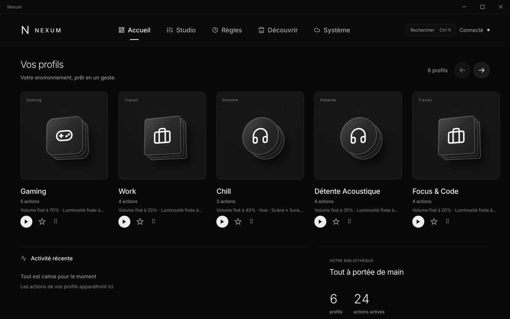
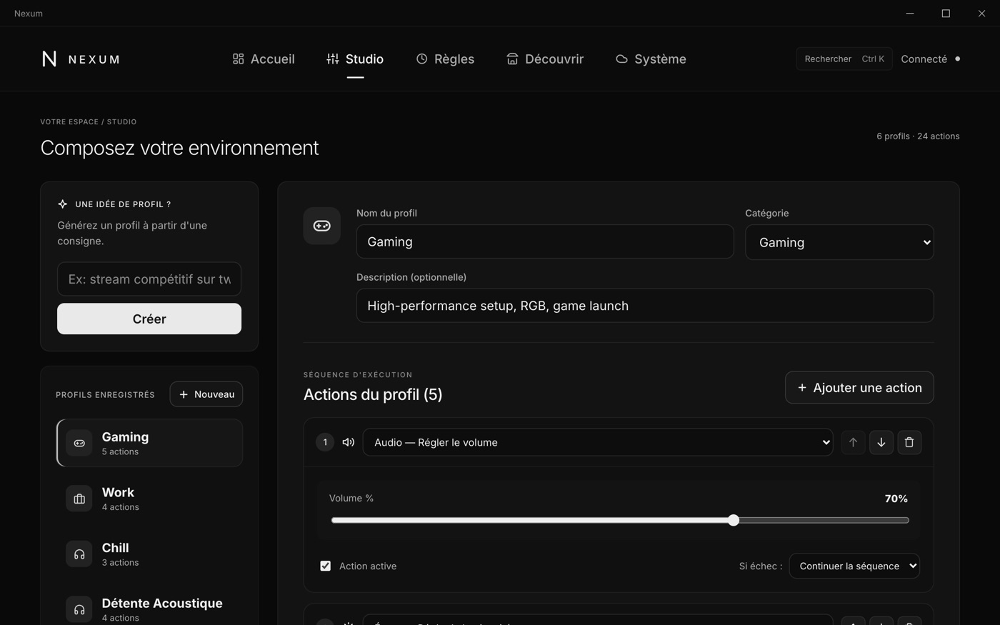
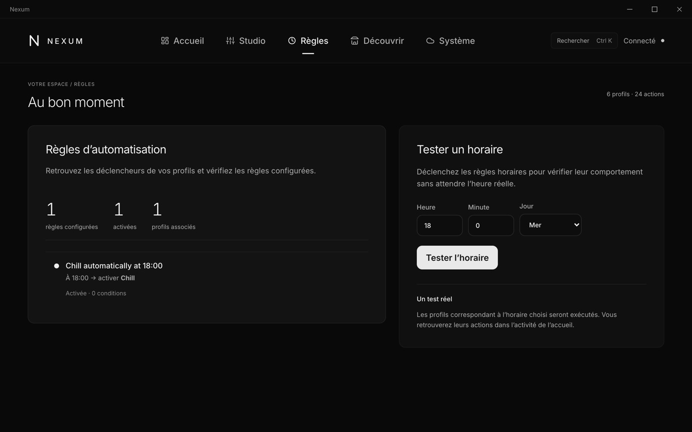
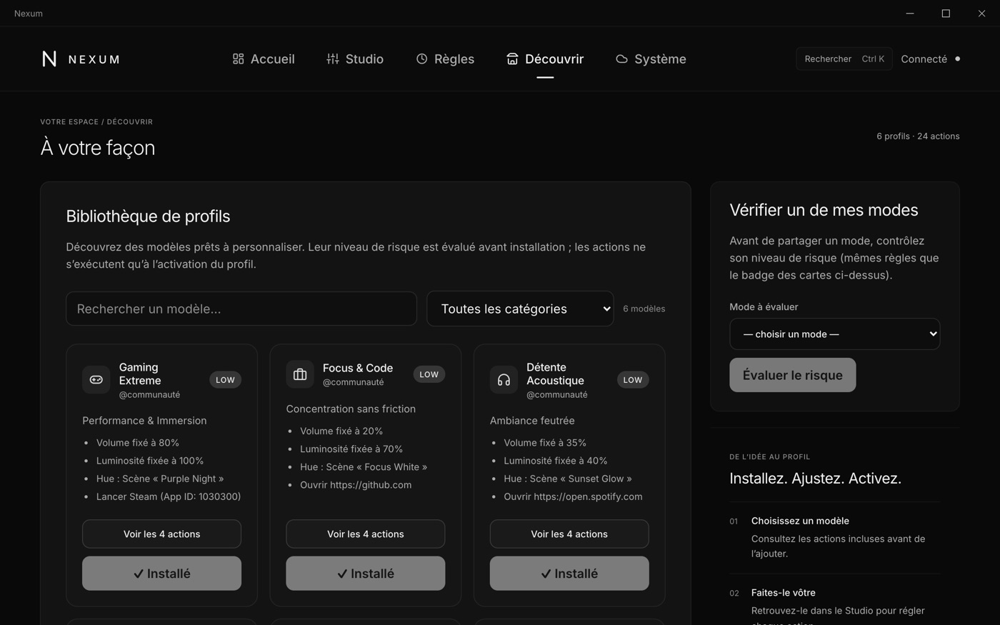

A no-code control centre that switches your whole PC setup (volume, brightness, lights, apps, games) in one click. Epitech Innovative Project, built by a team of five from July 2026 to July 2027.

The problem and who it's for
Switching from work to gaming, streaming or a quiet evening means adjusting a dozen things by hand, and every hardware brand ships its own app. Nexum is designed around three personas: Léo, a competitive gamer who wants zero setup time; Maxime, a streamer who wants to go live in one click; and Sarah, a remote developer who wants work and personal time clearly separated.
My Role
I own the roadmap, the backlog and the milestones, run the mentor follow-ups, and split the work across the team. I also contribute code on the front end and on macOS compatibility, including a local voice-command prototype.
How we prioritise
- Every beta feature is ranked with MoSCoW: a Must blocks the beta, a Could is dropped if time runs out.
- One scoping rule: 9 features that work 100% live beat 30 half-finished ones. The final jury demo has to run live, and video is not allowed.
- Deliberately cut from the beta: macOS support, real RGB peripherals, marketplace payments, the full mobile app and the Epic/GOG launchers. Philips Hue stays as the one real hardware effect in the demo.
From the backlog
As Sarah, I want to build a Chill mode without writing code, so my evening setup is one click away.
As Maxime, I want my Live mode to switch my Philips Hue lights, so my stream scene is set in one click.
As Léo, I want to describe a session in one sentence and get a ready-to-use mode.
How the team works
- I set up the GitHub Projects board (To do, In progress, Review, Done) with four milestones that mirror the EIP phases. The backlog holds 109 issues, each with a named owner.
- Every task gets its own branch, and nothing reaches main without a review and one approval from another teammate.
- Clear ownership: one main front-end developer, two back-end developers, one business and KPI owner, and me as Product Owner.
- Mentor follow-ups every six weeks, each one expected to show measurable progress.
AI and security by design
- Mode-as-Code: users describe a mode in a sentence. The AI only returns declarative data, which is checked against an allowlist before anything runs. It never generates executable code.
- Modes shared on the marketplace go through static analysis and get a risk score before anyone can import them.
- For voice commands I chose local Whisper transcription: free, offline, and no audio ever leaves the user's computer.



Where it stands
Phase 0 (foundations and market validation) runs until October 2026: the core app works and user interviews are starting. The first beta test plan is due in February 2027, and the live jury demo is in July 2027.